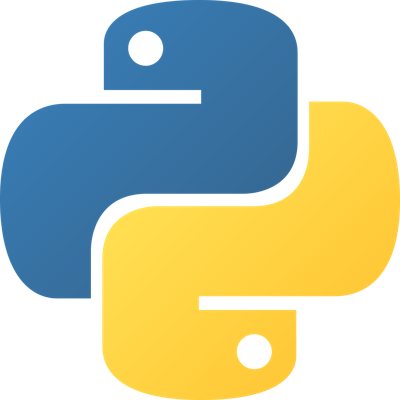

L’eau, ses pressions et ses débits, calculés en Python
Du réservoir au barrage, chaque calcul de ce site est une fonction Python que vous pouvez lire, copier et exécuter. Les résultats s’affichent avec l’appel de la fonction et sa réponse brute.
Problèmes types en génie civil
Pression au fond d’un réservoir
Un château d’eau de 4 m de hauteur d’eau : quelle pression supportent le radier et les joints ?
Hauteur d’eau à partir d’un manomètre
Un manomètre indique 250 kPa sur un réseau : à quelle hauteur d’eau cela correspond-il ?
Débit dans une conduite
Une conduite de 300 mm transporte l’eau à 2 m/s : quel débit en L/s, et quelle vitesse après un rétrécissement ?
Vidange d’un bassin
Un orifice de 10 cm au pied d’un bassin : quel débit de fuite pour 3 m d’eau ?
Poussée sur une vanne ou un barrage
Quelle force, et à quelle profondeur, pour 5 m d’eau sur une vanne de 3 m de large ?
Calculateurs
Code Python complet
C’est exactement le code exécuté par les calculateurs. Pour l’utiliser chez vous : pip install numpy matplotlib, puis python fluide_enis.py.
Ce que j’ai appris en Python
Chaque ligne est une notion des TP effectivement utilisée dans le code du site.
| TP | Notion | Où dans le code |
|---|---|---|
| TP1 | Fonctions avec docstring, paramètres, return | Toutes les formules : pression_hydro, calc_debit, force_paroi… |
| TP1 | Conditions if et raise ValueError | verifier_positif et le contrôle de Cd dans calc_vidange. |
| TP1 | Boucle for, tuples | Vérification des paramètres de calc_debit. |
| TP1 | Dictionnaires | Chaque calcul retourne un dictionnaire de résultats. |
| TP1 | f-strings | Messages d’erreur, légende et annotation du graphique. |
| TP2 | np.linspace | 100 profondeurs entre 0 et h dans calc_paroi. |
| TP2 | Calcul sur tableaux, indice [-1] | pression_hydro(rho, z) sur tout le tableau ; p[-1] donne la pression au pied. |
| NumPy | np.pi, np.sqrt | Section d’une conduite et vitesse de Torricelli. |
| TP3 | plt.subplots, ax.plot | Figure et courbe p(z). |
| TP3 | fill_betweenx | Variante verticale de fill_between pour colorer le diagramme. |
| TP3 | axhline, annotate | Centre de poussée en pointillés, annotation de la pression maximale. |
| TP3 | invert_yaxis, grid, legend, set_xlabel, set_title, savefig | Mise en forme imposée par la règle du TP : titre, axes avec unités, légende, grille discrète. |
À propos
Fluide.ENIS est un projet du module Algorithme et complexité (GC1, ENIS, 2026/2027), encadré par Mme Sirine Lamin. Il applique les TP de Python (bases, NumPy, Matplotlib) à l’hydrostatique et à l’hydraulique en charge.
L’équipe
Le calcul s’exécute dans votre navigateur avec Pyodide : aucune donnée n’est envoyée à un serveur. Les formules supposent un fluide incompressible, sans pertes de charge. Vérifiez les résultats avant tout dimensionnement réel.
Contact
Écrire à med.aydi@enis.tn, ou remplir le formulaire : votre application de messagerie s’ouvre avec le message prêt à envoyer.